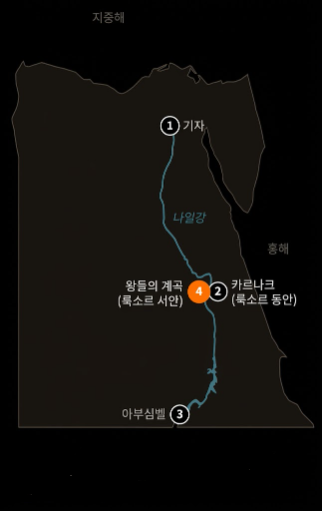
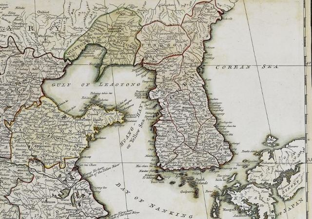

빛나는 점을 눌러 국가를 선택하세요 · 콘텐츠를 제공하는 국가는 5개국입니다
ScrollHistory is more than dates

01타임라인
시대의 순서를 인터랙티브 타임라인으로 보여줍니다.
- 02
정보 카드
사건·인물·유적을 카드로 나누어 핵심 내용을 먼저 제공합니다.

03지도와 위치
유적과 지역의 위치를 간단한 국가 지도로 보여줍니다.
- 04
아이콘과 그래프
국가를 대표하는 수치와 비교 정보를 정리합니다.
서비스 소개
프로젝트 목적
HISTRA는 정해진 5개 국가의 역사·문화 데이터를 학생이 이해하기 쉬운 시각적 콘텐츠로 재구성하는 웹사이트입니다. 지구본은 국가를 선택하는 시작점으로 사용하고, 국가 상세 페이지에서는 타임라인·지도·카드·아이콘·수치 정보 등을 활용해 긴 설명을 핵심 정보와 시각 자료로 나누어 보여줍니다.
HISTRA는 세계 전체의 국가를 모두 다루는 서비스가 아닙니다. 콘텐츠를 제공하는 국가는 영국·중국·한국·이탈리아·이집트 5개 국가입니다.
콘텐츠 이용 방법
- 지구본의 빛나는 점이나 상단 메뉴, 국가 목록에서 국가를 선택합니다.
- 시대의 순서는 인터랙티브 타임라인으로 확인합니다.
- 사건·인물·유적은 정보 카드로 핵심 내용을 먼저 확인합니다.
- 자세한 설명은 카드를 선택하면 단계적으로 확인할 수 있습니다.
- 상단 로고를 누르면 언제든 메인 홈으로 돌아옵니다.